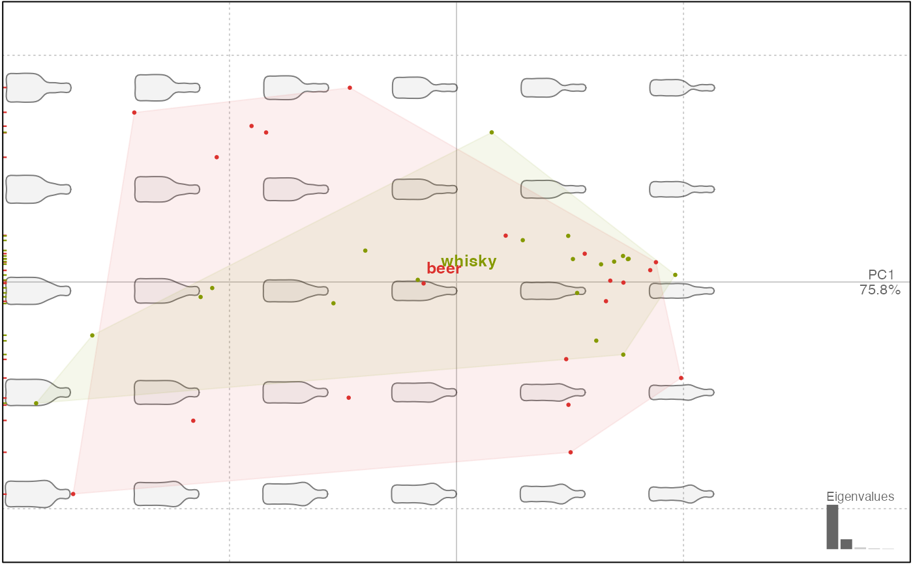
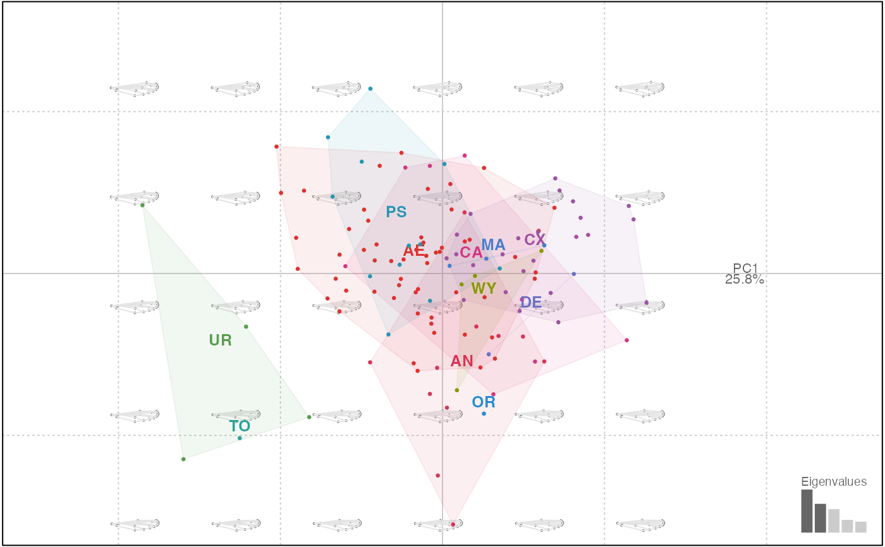

Principal component analysis on Coe objects
Performs a PCA on Coe objects, using prcomp.
PCA(x, scale., center, fac) # S3 method for OutCoe PCA(x, scale. = FALSE, center = TRUE, fac) # S3 method for OpnCoe PCA(x, scale. = FALSE, center = TRUE, fac) # S3 method for LdkCoe PCA(x, scale. = FALSE, center = TRUE, fac) # S3 method for TraCoe PCA(x, scale. = TRUE, center = TRUE, fac) # S3 method for default PCA(x, scale. = TRUE, center = TRUE, fac = data.frame()) as.PCA(x, fac)
Arguments
| x | a Coe object or an appropriate object (eg prcomp) for |
|---|---|
| scale. | logical whether to scale the input data |
| center | logical whether to center the input data |
| fac | any factor or data.frame to be passed to |
Value
a 'PCA' object on which to apply plot.PCA, among others. This list has several
components, most of them inherited from the prcomp object:
sdevthe standard deviations of the principal components (i.e., the square roots of the eigenvalues of the covariance/correlation matrix, though the calculation is actually done with the singular values of the data matrix)eigthe cumulated proportion of variance along the PC axesrotationthe matrix of variable loadings (i.e., a matrix whose columns contain the eigenvectors). The function princomp returns this in the element loadings.center, scale the centering and scaling usedxPCA scores (the value of the rotated data (the centred (and scaled if requested) data multiplied by the rotation matrix))other components are inherited from the
Coeobject passed toPCA, egfac,mshape,method,baseline1andbaseline2, etc. They are documented in the corresponding*Coefile.
Details
By default, methods on Coe object do not scale the input data but center them. There is also a generic method (eg for traditional morphometrics) that centers and scales data.
See also
Other multivariate: CLUST,
KMEANS, LDA,
MANOVA_PW, MANOVA,
classification_metrics,
mshapes
Examples
#> A PCA object #> -------------------- #> - 40 shapes #> - $method: [ efourier analysis ] #> - $fac: 1 classifier: #> 'type' (factor 2): beer, whisky. #> - All components: sdev, rotation, center, scale, x, eig, fac, mshape, method, cuts.plot(bot.p, morpho=FALSE)plot(bot.p, 'type')#>op.p <- PCA(op) op.p#> A PCA object #> -------------------- #> - 210 shapes #> - $method: [ npoly analysis ] #> - $fac: 4 classifiers: #> 'var' (factor 4): Aglan, Cypre, MouBo1, PicMa. #> 'domes' (factor 2): cult, wild. #> 'view' (factor 2): VD, VL. #> 'ind' (factor 30): O1, O10, O11, O12, O13, O14, O15, O16, O17, O18, O19 ... + 19 more. #> - All components: sdev, rotation, center, scale, x, eig, fac, mshape, method, mod, baseline1, baseline2, cuts.plot(op.p, 1, morpho=TRUE)#> A PCA object #> -------------------- #> - 127 shapes #> - $method: [ procrustes analysis ] #> - $fac: 1 classifier: #> 'group' (factor 11): AE, AN, CA, CX, DE, MA, OR, PS, TO, UR, WY. #> - All components: sdev, rotation, center, scale, x, eig, fac, mshape, method, cuts, links.plot(wpp, 1)# "foreign prcomp" head(iris)#> Sepal.Length Sepal.Width Petal.Length Petal.Width Species #> 1 5.1 3.5 1.4 0.2 setosa #> 2 4.9 3.0 1.4 0.2 setosa #> 3 4.7 3.2 1.3 0.2 setosa #> 4 4.6 3.1 1.5 0.2 setosa #> 5 5.0 3.6 1.4 0.2 setosa #> 6 5.4 3.9 1.7 0.4 setosairis.p <- prcomp(iris[, 1:4]) iris.p <- as.PCA(iris.p, iris[, 5]) class(iris.p)#> [1] "PCA" "prcomp"plot(iris.p, 1)